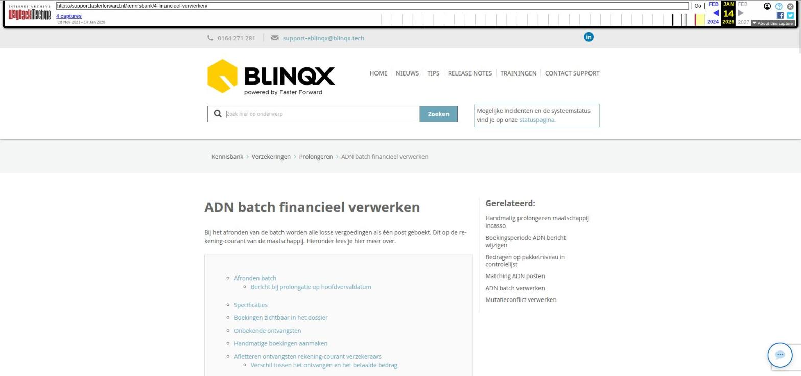

Uren registreren in een dossier

Tekstinhoud
Uren registreren in een dossier
Het is belangrijk om vast te leggen hoeveel tijd je besteed aan werkzaamheden. Zo heb je inzicht in de bestede tijd én kun je direct facturen opstellen. We leggen uit hoe je dit doet in een dossier.
Wat moet je instellen?
Prijs instellen
Factuur template met specificaties instellen of wijzigen
Urenfacturatie vanuit het dossier
Kolommen
Factuur aanmaken
Foutieve factuur
Wat moet je instellen?
Om facturatie van uren in te stellen zijn een aantal stappen benodigd:
Bij de registraties dient facturabel aangevinkt te zijn.
Er dient een keuze gemaakt te worden of er op basis van activiteit of de uurprijs van de medewerker voor deze activiteit gefactureerd wordt. Deze moeten ook ingericht zijn.
Factuurtemplate moet ingericht worden met specificaties
Blinqx zet het tabblad 'Urenfacturatie' aan.
Wij richten dit voor je in. Stuur hiervoor een opdracht naar support-eblinqx@blinqx.tech.
Zodra wij dit hebben ingericht, kun je de facturatie van uren ook zelf wijzigen als je de juiste beheerrechten hebt.
Prijs instellen
Er zijn twee manieren om de prijs in te stellen en te bepalen.
1. Uurtarief werknemer
Op basis van het uurtarief zoals ingeregeld onder 'Mijn instellingen' van de gebruiker. Hier is per activiteittype een uurtarief in te richten.
Ga hiervoor naar Mijn instellingen > instellingen > activiteit kosten.
Onder het tabblad Activiteit Kosten zie je alle activiteiten staan, bijvoorbeeld Algemeen of Advies opstellen. Deze kunnen per omgeving verschillen. Onder deze activiteit kan je een uurtarief instellen die specifiek geldt voor die activiteit.
De activiteiten vind je terug wanneer je een registratie aanmaakt in het dropdownmenu 'Soort'.
Wil je meer soorten activiteiten of soort registraties hebben? Lees hier hoe je deze kunt aanmaken.
2. Uurtarief product
Op basis van de verkoopprijs zoals ingeregeld bij het betreffende product dat gekoppeld zit aan de activiteit waarop geboekt is.
Je koppelt een product aan de activiteit. Dit in Beheer – Urenregistratie. Hier lees je hoe je dat kunt doen.
Er wordt dan gekeken naar de prijs van dit product. Deze prijs stel je in onder Producten – productbeheer – tabblad producten – zoek op productnaam – klik op product – tabblad Inkoop/verkoop – vul hier de verplichte velden in en de verkoopprijs. Het handigst is om een apart product te maken voor de urenregistratie. Hier lees je hoe je een product kunt aanmaken en kan instellen voor facturatie.
3. Setting
Een algemeen uurtarief voor de gehele eBlinqxomgeving. Deze instelling wordt door Faster Forward gedaan. Geef jouw algemeen uurtarief door via een e-mail naar support-eblinqx@blinqx.tech.
Factuur template met specificaties instellen of wijzigen
De urenregistraties wil je ook kunnen tonen op een factuur. Daarom is het verstandig om een aparte factuurtemplate te maken voor de urenregistraties met daarin de specificaties.
Voor het instellen/wijzigen van de factuurtemplate ga je naar Beheer – Documenttemplate manager.
Klik op het kopieericoon om een een kopie van de reeds bestaande factuurtemplate te maken.
Voeg een blok "Specificatie' toe indien niet aanwezig. Zet hier onderstaande tags in:
Open het tabblad 'Instellingen factuurregels' en stel deze in.
Ga daarna naar 'Instellingen factuurspecificaties' en stel daar de gewenste gegevens in.
Urenfacturatie vanuit het dossier
Wanneer er facturabele uren zijn geregistreerd (in de registratie is dan facturabel aangevinkt) dan staan deze onder het tabblad Urenfacturatie in het dossier. Hierin kan je verschillende filters instellen om resultaten naar voren te krijgen. De ingestelde filters zijn belangrijk voor het opstellen van de factuur.
Kolommen
In het overzicht staan diverse kolommen.
Prijs activiteit: aan de activiteit moet je een product koppelen. Hier wordt de prijs getoond die onder het product staat ingesteld. Is er geen product aan de activiteit gekoppeld dan komt hier te staan 'Product inrichten'. Door hierop te klikken kom je uit in het scherm waar je dit kunt instellen. De prijs die je instelt onder het product wordt gezien als uurtarief. De prijs wordt berekend door middel van het uurtarief en de tijd (verbruik) die je hebt geregistreerd.
Prijs persoon: hier wordt de prijs getoond die staat ingesteld onder persoon voor de betreffende activiteit. De prijs die je instelt onder de persoon is het uurtarief. De prijs wordt berekend door middel van dit uurtarief en de tijd (verbruik) die je hebt geregistreerd. Staat deze niet ingesteld dan komt er te staan 'Verkoopprijs inrichten'. Ook komt dit er te staan als de registratie aangemaakt is voor de startdatum die staat ingesteld bij het uurtarief onder de persoon. Door hier op te klikken kom je uit in het scherm waar je dit kunt instellen.
Verbruik: de tijd die je hebt geregistreerd. Aan de hand van dit verbruik wordt de prijs berekend.
Factuur aanmaken
Vanuit het tabblad Urenregistratie kan je een factuur aanmaken. Hierbij zijn de gekozen filters belangrijk.
Werkzaamheid: kies hier voor Factureren
Verkoopprijs op basis van: hiermee bepaal je of op de factuur de prijs van de activiteit komt te staan of van de persoon.
Template: kies hier de juiste template (de template voor urenregistratie)
Selecteer vervolgens de uren die op de factuur moeten komen. Dit door de checkboxes ervoor aan te vinken.
Nu verschijnt de knop 'Factuur aanmaken'. Klik daarop en je komt in de factuur. Na controle van de factuur sla je de factuur op. De factuur met specificatie van de activiteiten wordt aangemaakt. Via de workflow boek je de factuur.
Foutieve factuur
Mocht je posten vergeten zijn dan kan je de aangemaakte factuur verwijderen mits deze nog niet geboekt is. De posten uit deze factuur komen dan weer terug 'open' te staan onder het tabblad Urenfacturatie. Je kunt dan vanuit hier opnieuw een factuur aanmaken.
Laatste update: 15 oktober 2025
Was deze informatie nuttig?
Ja Nee
[Opmerking archivering: dit artikel staat onder twee kennisbankcategorieën: Facturatie > Facturatie, en Dossier > Registraties.]